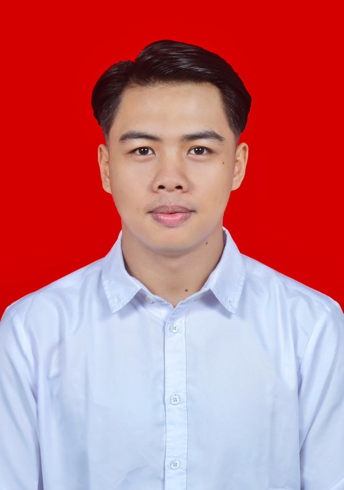

Saya Kevin Clieff Emor, S.Si, Ahli K3 bersertifikat Kementerian Ketenagakerjaan RI dengan pengalaman administrasi di lingkungan pertambangan dan kompetensi Data Management Staff.

Ahli K3 bersertifikat Kementerian Ketenagakerjaan RI dengan pengalaman di bidang administrasi serta didukung sertifikat BNSP Data Management Staff.
Memiliki kemampuan dalam penerapan SMK3, HIRADC/JSA, inspeksi keselamatan kerja, pengendalian risiko, pemantauan kepatuhan terhadap standar K3, pengelolaan data, penyusunan laporan, koordinasi administrasi, dan kelengkapan dokumen.
SMK3, HIRADC/JSA, inspeksi keselamatan, identifikasi bahaya, pengendalian risiko dan pemantauan kepatuhan standar K3.
Pengelolaan dokumen, laporan, data operasional, koordinasi administrasi, inventaris dan dokumentasi kegiatan.
Pengelolaan data terstruktur, rekapitulasi, penyusunan laporan, serta ketelitian dan kelengkapan data.
Kementerian Ketenagakerjaan Republik Indonesia — 2026.
Badan Nasional Sertifikasi Profesi (BNSP) — 2022.
Universitas Negeri Manado — 2016–2021.
President • 2020–2023
Koordinator Bidang • 2020–2021
Komunikasi, koordinasi, problem solving, pengambilan keputusan, multitasking, public speaking, disiplin dan integritas.
Terbuka untuk peluang kerja dan kolaborasi di bidang K3/HSE, safety, administrasi pertambangan dan posisi relevan.
Chat WhatsApp